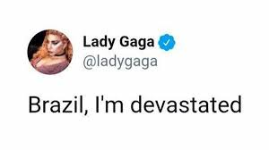

COMO UMA BOA DIVA POP, SUA CARREIRA É RECHEADA DE MEMES E MOMENTOS ENGRAÇADOS. CONFIRA OS MAIS MEMORÁVEIS ABAIXO !
“BRAZIL, I’M DEVASTATED”
Em 2017, em seu “X (Twitter)” explicou sofrer de fibriomialgia, uma síndrome clínica que se manifesta com dor no corpo inteiro, principalmente na musculatura. E por isso, não poderia comparecer ao show no “Rock in Rio”. Apesar do assunto triste, até hoje os fãs riem e ironizam da forma dramática como Lady Gaga se expressou.
“ELA NÃO VEM MAIS”
Também em 2017, após o cancelamento do show no Rock in Rio, de frente para o hotel Fasano, na Zona Sul do Rio de Janeiro, fãs esperavam para ver a chegada da artista ao estabelecimento. Foi lá também que eles descobriram a triste notícia do cancelamento quando alguém, gravando o vídeo dentro de um carro, afirma: "Gente, olha isso. Tudo isso é fã esperando a Lady Gaga e ela não veio. Ela não vem mais!". O motivo de risada, além da situação, foi a resposta de um fã, que exclamou indignado: "F*da-se!. O vídeo viralizou nas redes sociais e perpetua até hoje.
“DON’T CALL ME GAGA”
A piada surgiu após fãs editarem uma foto de Gaga, capturada por paparazzis, onde seu perfil se assemelhou a caverna presente na tela de bloqueio do windows 10. Após essa descoberta, internautas compartilharam a informação, em forma de piada, com a música "Monster" de fundo, no trecho em que Lady canta : "Don't call me Gaga". Até hoje, little monsters compartilham e se divertem com o meme.
Navegue pelos ícones "Looks e Clipes" abaixo do título e conheça mais, ou relembre sobre! Clique em "Home" para retornar ao menu inicial